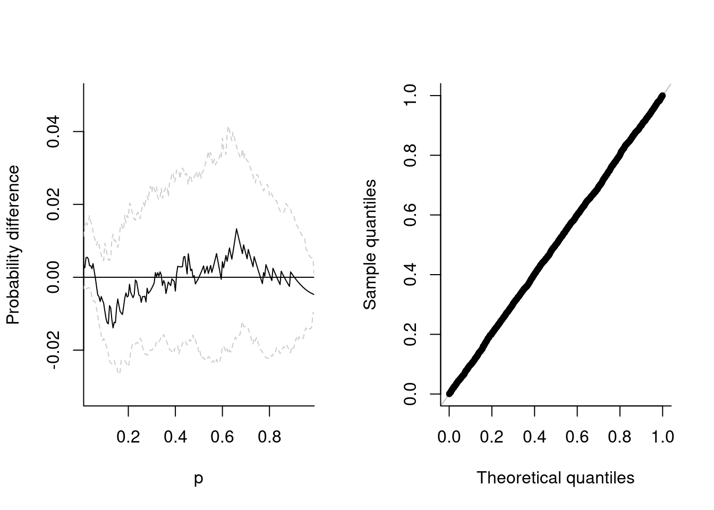
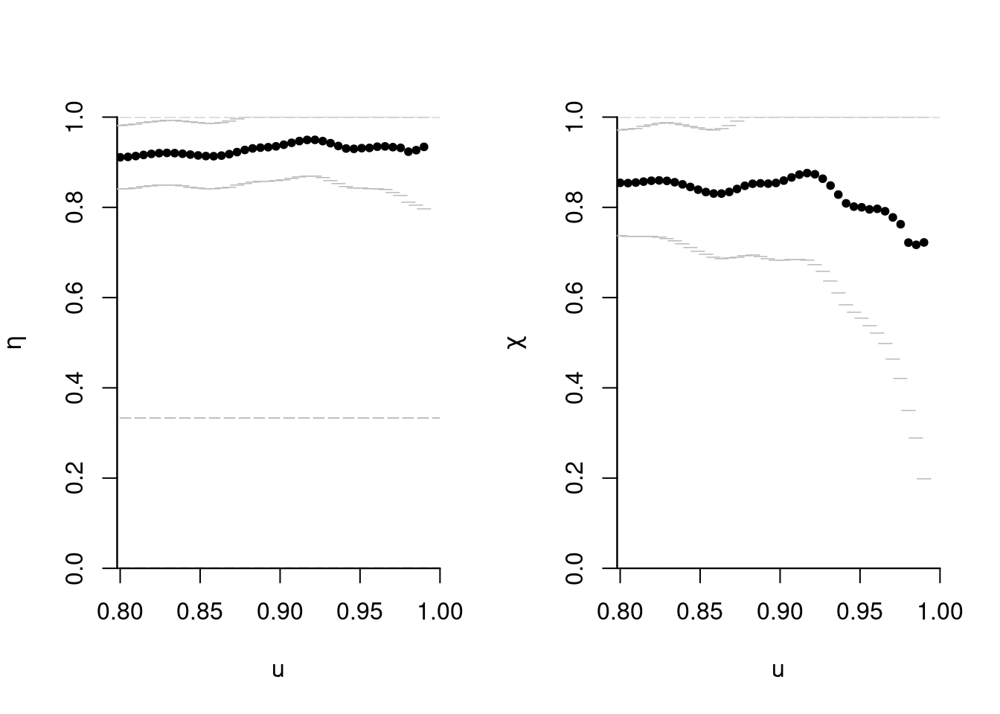
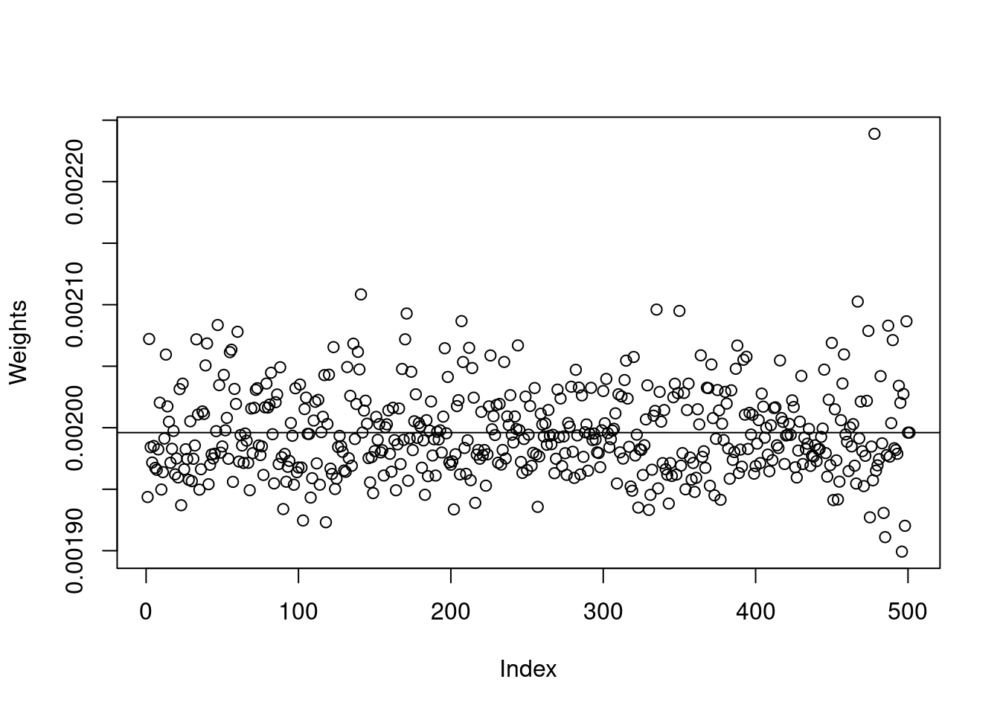
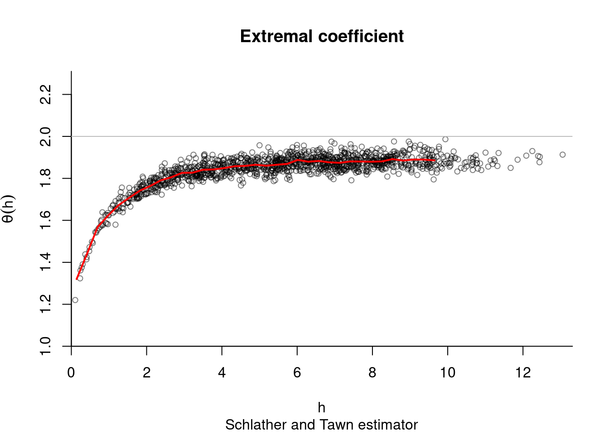
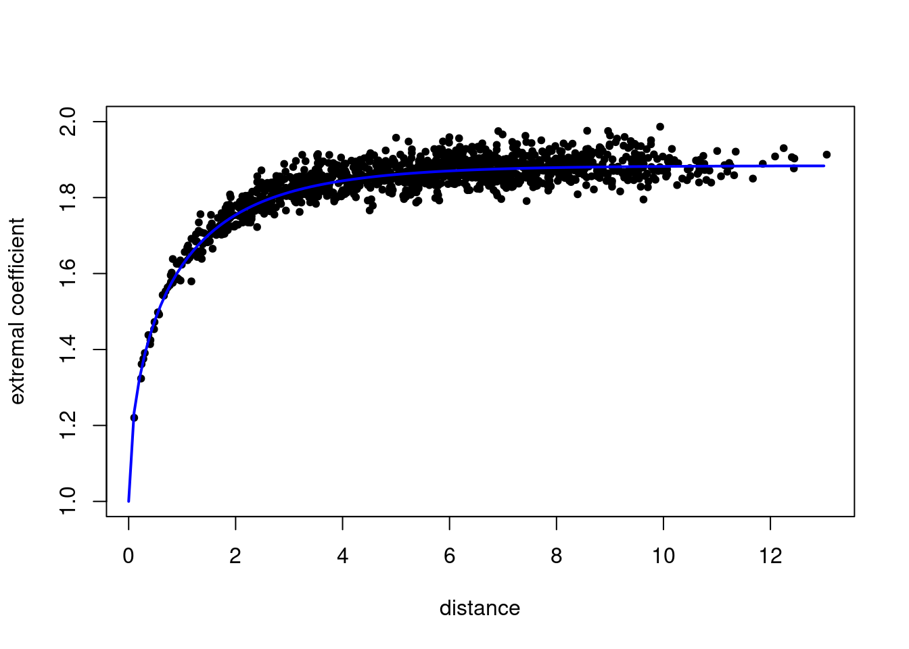

4 Simulation
4.1 Max-stable processes
Let \(\mathcal{S}\) be a compact subset of \(\mathbb{R}^d\) The de Haan spectral representation of simple max-stable processes is \[Z(\boldsymbol{s}) = \max_{i \in \mathbb{N}} \zeta_i W_i(\boldsymbol{s}), \qquad \boldsymbol{s} \in \mathcal{S},\] where \(\boldsymbol{W}\) is a stochastic process satisfying \(\mathrm{E}\{W(\boldsymbol{s})_{+}\}=1\) for any \(\boldsymbol{s} \in \mathcal{S}\) and \(\{\zeta_i\}_{i \in \mathbb{N}}\) is a Poisson point process with intensity function \(\zeta^{-2} \mathrm{d} \zeta\). Max-stable processes arise as the pointwise maximum of an infinite collection of random functions \(\varphi_i = \zeta_i \boldsymbol{W}_i\).
The distribution function of a \(D\)-dimensional max-stable vector can be defined in terms of a measure \(\Lambda\), termed exponent measure, defined on \(\mathbb{R}^D \setminus\{\boldsymbol{0}_D\}\) viz. \[\Pr(\boldsymbol{Z} \leq \boldsymbol{z}) = \exp\{\Lambda([-\boldsymbol{\infty}, \boldsymbol{z}]^\mathrm{c})\}, \boldsymbol{z} > \boldsymbol{0}_D.\] It follows from max-stability that the exponent measure is homogeneous of order \(-1\).
4.2 \(\mathcal{R}\)-Pareto processes and generalizations
Let \(\mathcal{F}^+\) denote the set of continuous non-negative non-null functions. A risk functional \(\mathcal{R}:\mathcal{F}^+ \to [0, \infty)\) is a continuous functional which is homogeneous of order \(1\), i.e., \(\mathcal{R}(tf) = t\mathcal{R}(f)\) for \(f \in \mathcal{F}^+\) and \(t>0\). A \(\mathcal{R}\)-Pareto process admits the stochastic representation (Ferreira and Haan 2014, @Dombry/Ribatet:2015) \[\begin{align} \mathsf{X} = P \frac{\mathsf{S}}{\mathcal{R}(\mathsf{S})}, \end{align}\] for \(P\) a unit Pareto random variable with survival function \(\Pr(P>x) = x^{-\alpha}\) for \(x \geq 1\) and a stochastic process \(\mathsf{S}\), independent of \(P\), with sample paths in \(\mathbb{S}_{\mathrm{ang}} = \{f \in \mathcal{F}^+ \setminus \mathcal{C}_{\mathcal{R}}: \|f\|_{\mathrm{ang}} = 1\}\) and where \(\mathcal{C}_{\mathcal{R}} = \{g \in \mathcal{F}^+: \mathcal{R}(x)=0\}\) and \(\|\cdot\|_{\mathrm{ang}}\) is a norm. \(\mathcal{R}\)-Pareto processes come about when looking at the limit distribution of \(\mathcal{R}\)-exceedances, i.e. \(\{f: \mathcal{R}(f) >u\}\) for a large threshold \(u\), assuming unit Frechet margins. This can be achieved in practice by standardizing the margins, but with the drawback that the exceedances are defined on the transformed scale.
Fondeville (2018) lifts this assumption and define generalized \(\mathcal{R}\)-Pareto processes, allowing for different location and scale marginal parameters (but with a common shape parameter). The risk region in which extreme observations lie is \[\begin{align*} \mathcal{A}_u= \left\{f \in \mathcal{F}^+ \setminus \mathcal{C}_{\mathcal{R}}: \mathcal{R}\left( \boldsymbol{\tau} \frac{f^\xi-1}{\xi}+\boldsymbol{\eta}\right) \geq u\right\}, \end{align*}\] where \(\boldsymbol{\eta}\) is a location function and \(\boldsymbol{\tau}\) is a scale function. The probability measure of \(\mathsf{Z}^*\) over \(\mathcal{A}_u\) is \(\Lambda(\cdot)/\Lambda\{\mathcal{A}_u\}\). The stochastic representation of the generalized \(\mathcal{R}\)-Pareto vector is \[\begin{align} Z(\boldsymbol{s}) = \tau(\boldsymbol{s}) \frac{X(\boldsymbol{s})^{\xi}-1}{\xi}+ \eta(\boldsymbol{s}), \end{align}\] where \(X(\boldsymbol{s})\) is a \(\mathcal{R}\)-Pareto process. When \(\mathcal{R}\) is \(\max\), the finite-dimensional distributions are multivariate generalized Pareto (Rootzén, Segers, and Wadsworth 2018).
4.3 Algorithms
The original goal of the mev package was to implement the algorithm of Dombry, Engelke, and Oesting (2016), in order to perform exact simulation from max-stable vectors by sampling each extremal function in turn. Since then, other algorithms for simulating from standard \(\mathcal{R}\)-Pareto processes and generalized \(\mathcal{R}\)-Pareto processes have been added to the package. These are based on accept-reject method or composition sampling and can be slow in high dimensions. Note that packages such as RandomFields and SpatialExtremes are tailored for spatial processes and include more efficient algorithms to sample the (log-)Gaussian components appearing in the Brown–Resnick and extremal Student models, which makes them typically faster. The vignette provides details about the parametrization of the models implemented in mev.
The various functions of interest for simulation include
rmev, which is the workshorse for simulating max-stable random vectors;rmevspecreturns samples from the angular distribution defined with respect to the \(l_1\) norm;rparpfor simulating \(\mathcal{R}\)-Pareto processes through accept-reject;rparpcsfor simulating \(\mathcal{R}\)-Pareto processes using composition sampling, e.g. (???)rgparpfor simulating generalized \(\mathcal{R}\)-Pareto processes using accept-reject.
This approach is only available for Brown–Resnick and extremal Student processes and is more computationally intensive since it requires computing numerically mixture weights. However, these need only be computed once and this approach is more efficient for simlating large samples, particularly in cases where the acceptance rate is very low (notably if \(R(\boldsymbol{X})=\min_{j=1}^DX_j\)).
Let’s start by simulating from a simple max-stable random vector from the negative logistic model. The margins are unit Frechet, and we can verify this by pooling the observations and fitting a generalized extreme value distribution to the sample. The parameter estimates are correct, and a probability-probability plot shows that the .
If \(\boldsymbol{Z}\) is a max-stable vector of size \(D\) with standard Gumbel margins, with distribution function \(G(\boldsymbol{z}) = \exp[-V\{\exp(\boldsymbol{z})\}]\), then for any subset of size \(J \subseteq\{1, \ldots, D\}\), the variable \(Z_J=\max_{j \in J} Z(\boldsymbol{s}_j)\) has distribution function \(H_J(z) = \exp\{-\exp(z-\mu_{J})\}\), where \(\mu_J=\log\{V_J(\boldsymbol{1})_{|J|})\}\) and \(0 \leq \mu_J \leq \log(|J|)\). This follows from the homogeneity of the exponent measure. Gabda et al. (2012) propose a probability-probability plot based on fitting \(\mu_J\) through maximum likelihood with the parameter constraints for each set of \(|J|\) stations. The data are obtained by pooling replications of the max-stable field and selecting all subsets of size \(|J|\) if \(\binom{D}{|J|}\) is small, or else a limited number of stations among those that display the higher dependence so as to maximize the power of the test (independence being a special case of max-stability). Uncertainty quantification is performed using a nonparametric bootstrap. The function maxstabtest implements this for the special case \(J=D\).
library(mev)
set.seed(0)
samp <- rmev(n = 1000, d = 5, param = 0.1, model = "neglog")
fgev <- fit.gev(c(samp), show = FALSE)
fgev$estimate## loc scale shape
## 0.9954939 0.9919429 0.9867670par(mfrow = c(1, 2))
# Test of max-stability
maxstabtest(dat = samp)
# Probability-probability plot
plot(fgev, which = 1, main = "")
The likelihood of max-stable processes is untractable, so inference is typically performed using composite likelihood. The package evd includes routines for doing this in the bivariate setting (see fbvpot).
Consider a collection of independent and identically distributed vectors \(\boldsymbol{X}\) with continuous marginal distributions that are in the max-domain of attraction of a max-stable distribution with limit measure \(\Lambda\). One can transform the observations \(\boldsymbol{X}_i\) into pseudo-uniform samples using the empirical distribution function or else the semi-parametric estimator,
\[\begin{align}
\check{F}_j(x) =
\begin{cases}
\mathrm{I}\{i: y_{ij} \leq x\}/(n+1), & x \leq u_j,\\
1-\{1-\tilde{F}_j(u_j)\}\left\{1+\hat{\xi}\left(\frac{x-u_j}{\hat{\tau}_j}\right)\right\}^{-1/\hat{\xi}_j}_{+}, & x >u_j.
\end{cases}
\end{align}\]
(see spunif). We can back-transform the pseudo-uniform samples \(u_{ij} = \check{F}_j(y_{ij})\) to unit Pareto using the quantile transform,
\(z_{ij}^{\mathrm{p}} = 1/1-(u_{ij})\). If we map the random vector \(\boldsymbol{Z}^{\mathrm{p}}\) to pseudo-polar coordinates, \(\boldsymbol{Z}^{\mathrm{p}} \mapsto (R, \boldsymbol{\Omega})\) from \(\mathbb{R}^D_{+} \to (0, \infty) \times \mathbb{S}_1\), where \(\mathbb{S}_1=\{ \boldsymbol{\omega} \in \mathbb{R}^D_{+}: \|\boldsymbol{\omega}\|_1=1\}\) is the \(\ell_1\)-simplex. The measure \(\Lambda\) factorizes as a product measure \(\Lambda(\mathrm{d}\boldsymbol{z}) = D \zeta^{-2}\mathrm{d}\zeta \rho_1(\mathrm{d}\boldsymbol{\omega})\) with angular measure \(\rho_1\), a probability measure satisfying the moment constraint \(D\int_{\mathbb{S}_1} \omega_j \rho_1(\mathrm{d}\boldsymbol{\omega})=1\) for \(j=1, \ldots, D\); this moment constraint holds for any \(\rho_1\), whereas it will be measure dependent if the radial measure is not \(\|\cdot \|_1\) (Einmahl and Segers 2009).
We can thus create an approximate sample \(\boldsymbol{\omega}\) from the angular measure \(\rho_1\) and estimate its distribution non-parametrically as
\[\hat{H}(w) = \sum_{i=1}^N \hat{p}_i\mathrm{I}\{\omega_i \leq w\},\]
where the weights \(\hat{p}_i\) are obtained as the solution of either the empirical or Euclidean likelihood problems with a mean constraint (Carvalho et al. 2013, @Einmahl:2009).
Since the resulting
spectral distribution is discrete (which is problematic in simulations), Carvalho et al. (2013) suggest fitting a Dirichlet kernel to
observations, with parameters \(\nu \boldsymbol{w}_i (i=1, \ldots, D)\) subject to the constraint \(\|\nu\boldsymbol{w}_{i}\|_1=1\). The’bandwidth’ tuning parameter \(\nu\) is chosen via cross-validation. The function angmeasdir fits Euclidean likelihood and returns a list with the weights vector wts, the cross-validation parameter nu and a \(n \times D\) matrix of parameters for the Dirichlet distribution.
Alternatively, we can estimate the limiting spectral measure
from the pseudo-observations enforcing the mean constraint using empirical likelihood, as proposed by Einmahl and Segers (2009). The function angmeas computes the weights associated to each observations.
samp <- rmev(n = 1000, d = 3, param = c(0.4,0.6,2.9, 0.1), model = "sdir")
taildep(samp, method = list(eta = "betacop", chi = "betacop"))
nparangmeas <- angmeas(samp, th = 0.5)
# Plot the probability weights and compute the column mean
plot(nparangmeas$wts, ylab = "Weights"); abline(h = 1/nrow(nparangmeas$ang))
colSums(nparangmeas$wts * nparangmeas$ang)## [1] 0.3333333 0.3333333dirangmeas <- angmeasdir(samp, th = 0.5)4.4 Extremal coefficient
As in SpatialExtremes, we can use the nonparametric estimates of the extremal coefficient as goodness-of-fit diagnostic. The following code samples data
coord <- 10*cbind(runif(50), runif(50))
di <- as.matrix(dist(coord))
dat <- rmev(n = 1000, d = 100, param = 3, sigma = exp(-di/2), model = 'xstud')
res <- extcoef(dat = dat, coord = coord)
# Extremal Student extremal coefficient function
XT.extcoeffun <- function(h, nu, corrfun, ...){
if(!is.function(corrfun)){
stop('Invalid function `corrfun`.')
}
h <- unique(as.vector(h))
rhoh <- sapply(h, corrfun, ...)
cbind(h = h, extcoef = 2*pt(sqrt((nu+1)*(1-rhoh)/(1+rhoh)), nu+1))
}
#This time, only one graph with theoretical extremal coef
plot(res$dist, res$extcoef, ylim = c(1,2), pch = 20,
ylab = "extremal coefficient", xlab = "distance")
extcoefxt <- XT.extcoeffun(seq(0, max(res$dist), by = 0.1), nu = 3,
corrfun = function(x){exp(-x/2)})
lines(extcoefxt[,'h'], extcoefxt[,'extcoef'], type = 'l', col = 'blue', lwd = 2)
4.5 Generalized \(\mathcal{R}\)-Pareto processes for functional threshold exceedances
We simulate a spatial generalized \(\mathcal{R}\)-Pareto process.
lon <- seq(650, 720, length = 50)
lat <- seq(215, 290, length = 50)
# Create a grid
grid <- expand.grid(lon,lat)
coord <- as.matrix(grid)
dianiso <- distg(coord, 1.5, 0.5)
sgrid <- scale(grid, scale = FALSE)
# Specify marginal parameters `loc` and `scale` over grid
eta <- 26 + 0.05*sgrid[,1] - 0.16*sgrid[,2]
tau <- 9 + 0.05*sgrid[,1] - 0.04*sgrid[,2]
# Parameter matrix of Huesler--Reiss
# associated to power variogram
Lambda <- ((dianiso/30)^0.7)/4
# Simulate generalized max-Pareto field above u=50
set.seed(345)
simu1 <- rgparp(n = 1, thresh = 50, shape = 0.1, riskf = "max",
scale = tau, loc = eta, sigma = Lambda, model = "hr")
# The same, but conditional on an exceedance at a site
simu2 <- rgparp(n = 1, thresh = 50, shape = 0.1, riskf = "site",
siteindex = 1225, scale = tau, loc = eta,
sigma = Lambda, model = "hr")
#Plot the generalized max-Pareto field
par(mfrow = c(1,2))
fields::quilt.plot(grid[,1], grid[,2], simu1, nx = 50, ny = 50)
SpatialExtremes::swiss(add = TRUE)
fields::quilt.plot(grid[,1], grid[,2], simu2, nx = 50, ny = 50)
SpatialExtremes::swiss(add = TRUE)
# Value at conditioning coordinate should be greater than 50
simu2[1225]## [1] 84.81661The code snippet below fits a Brown–Resnick model with power variogram to simulated data from the same model (based on more than one replicate). The parameters are estimated by minimizing the squared distance between empirical cloud of pairwise conditional probability of exceedance and the theoretical one. We include geometric anisotropy in the analysis.
lon <- seq(650, 720, length = 10)
lat <- seq(215, 290, length = 10)
# Create a grid
grid <- expand.grid(lon,lat)
coord <- as.matrix(grid)
dianiso <- distg(coord, 1.5, 0.5)
sgrid <- scale(grid, scale = FALSE)
# Specify marginal parameters `loc` and `scale` over grid
eta <- 26 + 0.05*sgrid[,1] - 0.16*sgrid[,2]
tau <- 9 + 0.05*sgrid[,1] - 0.04*sgrid[,2]
# Parameter matrix of Huesler--Reiss
# associated to power variogram
Lambda <- ((dianiso/30)^0.7)/4
# Simulate generalized max-Pareto field above u=50
set.seed(345)
simu1 <- rgparp(n = 1000, thresh = 50, shape = 0.1, riskf = "max",
scale = tau, loc = eta, sigma = Lambda, model = "hr")
extdat <- extremo(dat = simu1, margp = 0.9, coord = coord,
scale = 1.5, rho = 0.5, plot = TRUE)
# Constrained optimization
# Minimize distance between extremal coefficient from fitted variogram
mindistpvario <- function(par, emp, coord){
alpha <- par[1]; if(!isTRUE(all(alpha > 0, alpha < 2))){return(1e10)}
scale <- par[2]; if(scale <= 0){return(1e10)}
a <- par[3]; if(a<1){return(1e10)}
rho <- par[4]; if(abs(rho) >= pi/2){return(1e10)}
semivariomat <- mgp::power.vario(distg(coord, a, rho), alpha = alpha, scale = scale)
sum((2*(1-pnorm(sqrt(semivariomat[lower.tri(semivariomat)]/2))) - emp)^2)
}
# constrained optimization for the parameters
hin <- function(par, ...){
c(1.99-par[1], -1e-5 + par[1],
-1e-5 + par[2],
par[3]-1,
pi/2 - par[4],
par[4]+pi/2)
}
opt <- alabama::auglag(par = c(0.5, 30, 1.5, 0.5),
hin = hin, control.optim = list(parscale = c(0.5, 30, 1.5, 0.5)),
fn = function(par){
mindistpvario(par, emp = extdat[,'prob'], coord = coord)})## Min(hin): 0.49999
## Outer iteration: 1
## Min(hin): 0.49999
## par: 0.5 30 1.5 0.5
## fval = 77.37
##
## Outer iteration: 2
## Min(hin): 0.3992261
## par: 0.668296 74.8862 1.39923 0.556808
## fval = 6.52
##
## Outer iteration: 3
## Min(hin): 0.3992502
## par: 0.668285 74.8855 1.39925 0.556807
## fval = 6.52
## stopifnot(opt$kkt1, opt$kkt2)
# Plotting the extremogram in the deformed space
distfa <- distg(loc = coord, opt$par[3], opt$par[4])
plot(c(distfa[lower.tri(distfa)]), extdat[,2], pch = 20,
col = scales::alpha(1,0.1), yaxs = "i", xaxs = "i", bty = 'l',
xlab = "distance", ylab= "cond. prob. of exceedance", ylim = c(0,1))
lines(x = (distvec <- seq(0,200, length = 1000)), col = 2, lwd = 2,
2*(1-pnorm(sqrt(power.vario(distvec, alpha = opt$par[1], scale = opt$par[2])/2))))
References
Carvalho, Miguel de, Boris Oumow, Johan Segers, and Michał Warchoł. 2013. “A Euclidean Likelihood Estimator for Bivariate Tail Dependence.” Communications in Statistics - Theory and Methods 42 (7): 1176–92. https://doi.org/10.1080/03610926.2012.709905.
Dombry, Clément, Sebastian Engelke, and Marco Oesting. 2016. “Exact Simulation of Max-Stable Processes.” Biometrika 103 (2): 303–17. https://doi.org/10.1093/biomet/asw008.
Einmahl, John H. J., and Johan Segers. 2009. “Maximum Empirical Likelihood Estimation of the Spectral Measure of an Extreme-Value Distribution.” Ann. Statist. 37 (5B): 2953–89. https://doi.org/10.1214/08-AOS677.
Ferreira, Ana, and Laurens de Haan. 2014. “The Generalized Pareto Process; with a View Towards Application and Simulation.” Bernoulli 20 (4): 1717–37. https://doi.org/10.3150/13-BEJ538.
Fondeville, Raphaël de. 2018. “Functional Peaks-over-Threshold Analysis for Complex Extreme Events.” PhD thesis, Lausanne: EPFL; MATH. https://doi.org/10.5075/epfl-thesis-8927.
Gabda, Darmesah, Ross Towe, Jennifer Wadsworth, and Jonathan Tawn. 2012. “Discussion of ‘Statistical Modeling of Spatial Extremes’ by A. C. Davison, S. A. Padoan and M. Ribatet.” Statistical Science 27 (2): 189–92. https://doi.org/10.1214/12-STS376B.
Rootzén, Holger, Johan Segers, and Jennifer L. Wadsworth. 2018. “Multivariate Peaks over Thresholds Models.” Extremes 21 (1): 115–45. https://doi.org/10.1007/s10687-017-0294-4.